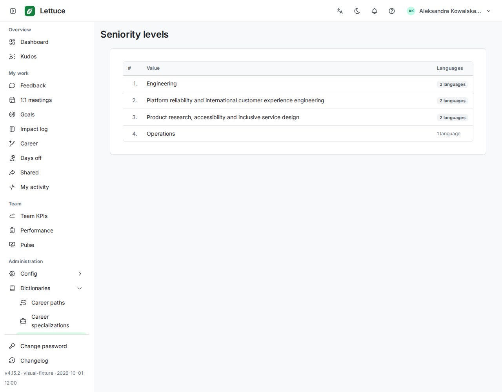
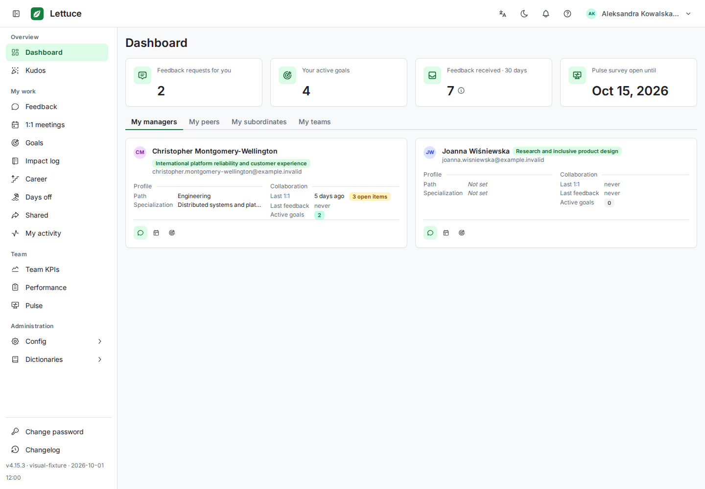
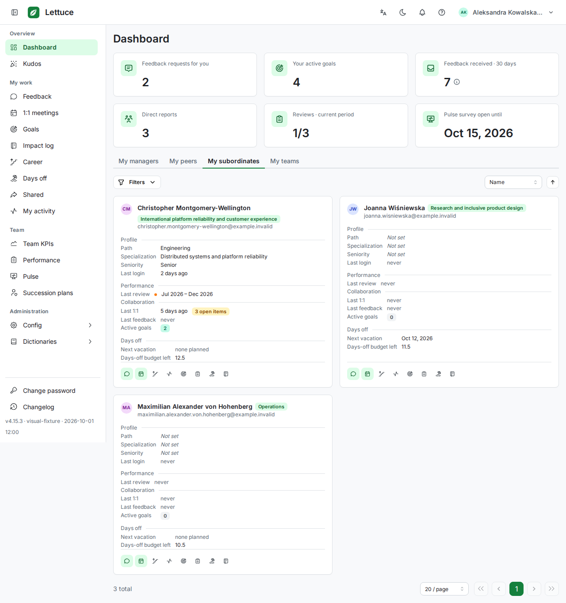
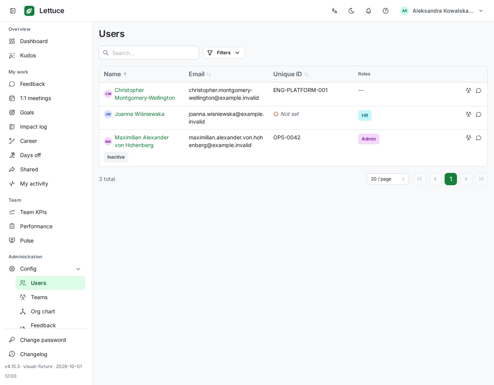

Desktop visual coverage · stage 1
Approved on 2026-10-04. The owner accepted these 18 images in review commit 05bcc4f3. They were promoted byte-for-byte to CI baselines. The previous v4.15.2 images are archived for comparison. Click an image for full resolution.
Sidebar fix: before, approved, difference
The active dictionary item is now visible above the pinned footer. Magenta marks raw image differences; it is a review aid, not the screenshot assertion algorithm.
Pulse questions
Seniority levels
Approved v4.15.2
Approved v4.15.3 Difference overlay
Difference overlay
Six new desktop views
Populated member/manager and member/admin states with long names and varied data. Normal vertical scrolling is allowed. Existing intentional truncation in person cards and wrapping in directory cells are preserved.
Dashboard · member · 1440px
Dashboard · manager · 1280px
Users · member · 1280px
Users · administrator · 1440px Teams · member · 1280px
Teams · member · 1280px Teams · administrator · 1440px
Teams · administrator · 1440px
Other ten reference images
Only the footer version digit changes from 4.15.2 to 4.15.3, within an 8×10px rectangle (x44–52, y947–957). Page content is unchanged. Expand any entry to inspect it.
dictionary-career-paths-admin-en-light-1280
dictionary-career-paths-admin-en-light-1440
dictionary-career-paths-member-en-dark-1280
dictionary-career-paths-member-en-light-1280
dictionary-career-specializations-member-en-light-1280
feedback-provided-en-light-1280
feedback-provided-en-light-1440
feedback-provided-pl-light-1280
feedback-received-en-light-1280
feedback-received-en-light-1440
These images are now approved CI expectations. Forms/detail screens and remaining feature lists follow in later review stages.